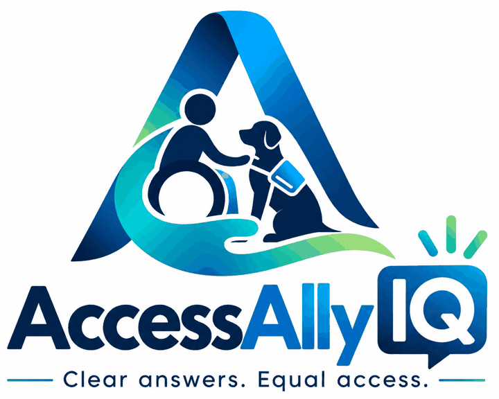

Skip to content
Access Ally
IQ
Clear answers. Equal access.
Federal only
Alabama
Alaska
Arizona
Arkansas
California
Colorado
Connecticut
Delaware
District of Columbia
Florida
Georgia
Hawaii
Idaho
Illinois
Indiana
Iowa
Kansas
Kentucky
Louisiana
Maine
Maryland
Massachusetts
Michigan
Minnesota
Mississippi
Missouri
Montana
Nebraska
Nevada
New Hampshire
New Jersey
New Mexico
New York
North Carolina
North Dakota
Ohio
Oklahoma
Oregon
Pennsylvania
Rhode Island
South Carolina
South Dakota
Tennessee
Texas
Utah
Vermont
Virginia
Washington
West Virginia
Wisconsin
Wyoming
American Samoa
Guam
Northern Mariana Islands
Puerto Rico
U.S. Virgin Islands
Search everything
Home
Places
Q&A
Animals
More

Who are you here as?
We’ll show what matters most to you. You can switch any time.
I have a service dog
Show my rights, log incidents, handle a refusal
I work at a business
What staff can ask, scripts, training, policy
I’m just curious
How service dogs work and how to act around them